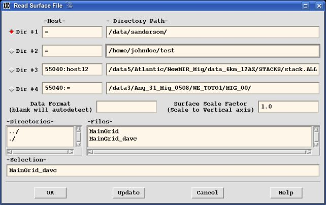

-
Add Segments:
This is the default option when a Display Window is first created. It will setup to add new pick segments. Pressing the left mouse button will set the first pick of a new segment. Where ever this pick is position determines the 2D segment plane where all picks are contained. Continuing to press the left mouse button will add more picks. Press the middle mouse button to remove the last pick. Press the right mouse button to terminate adding more picks and add the working segment to the active segment list for this XSD session. (NOTE: if only a single pick is made, then the segment will not be created. If you really desire to have a segment comprised of a single pick, then use "Segment→Add Single point Segment". - Add Single Point Segment:
This option creates a segment with only one pick. Every time the left mouse button is pressed, a single point segment is created. - Move Segment:
This option moves segments within the established 2D segment plane. To select a segment to move, press the left mouse button. The selected segment will change color. Then you can use the left mouse button to drag the segment around, anywhere within the 2D plane. Press the right mouse button to deselect the segment. Then either select another segment or change the "Edit Mode". - Delete Segment:
This option deletes segments. Press the left mouse button to select a segment (which will be highlighted). Press the right mouse button to deselect the segment. When a segment is selected, pressing the left mouse button a second time will delete the selected segment. - Copy Segments:
This option allows you to copy all the segments from one 2D segment plane to other planes. For each Axis outside the 2D segment plane select the axis value "From" which to copy the segments. Then select the axis values to copy the segment to starting from the "To" values through the "End" values incrementing by the "Inc" values. Press the "OK" button to copy the segments or "Cancel" to not copy them. The "Edit Modedoes not change. - Duplicate Segment:
This option duplicates segments. Press the left mouse button to select a segment (which will be highlighted). Press the right mouse button to deselect the segment. When a segment is selected, pressing the left mouse button a second time will duplicate the selected segment. The duplicated segment will be offset 3 vertical pixels more. - Refine Segment:
This option will add addition picks in between each existing picks of a selected segment. Press the left mouse button to select a segment (which will be highlighted). Press the right mouse button to deselect the segment. Each time the left mouse button is pressed when a segment is selected, addition picks are added halfway between each existing picks. - Split Segment:
This option is used to split an existing segment into two segments. Select a segment by pressing the left mouse button which will highlight the selected segment. Press the right mouse button to deselect the segment without splitting it or press the left mouse button again to split the segment up at the closest pick point. No segment is selected after that. - Join Segment:
This option joins two segments. Select a segment by pressing the left mouse button which will highlight the selected segment and mark the end point of the selected segment (closest to the cursor) with a "Χ". Then press the left mouse button again closest to the end point of another segment you wish to join to the selected segment. Press the right mouse button to deselect the segment. - Label Segment:
This option allows you to label the pick segments. Select a segment by pressing the left mouse button. Pressing it again will bring up the Input Label Window. Type in what you want for the label (no blank spaces). Press the "OK" button to accept the change or "Cancel" to close the Window. - Clear All Segments:
This option will remove ALL pick segments. A verification window will pop-up first to prevent inadvertently clearing them.
There are two type of XSD pick files. The "Old Format" is based on the old USP format which only has Samples, Traces and Records (3D). When dealing with this old format, XSD treats all axes from 3 on as simple records. The "New Format" pickfile if based on N-Dimensional datasets. Pick segments are 2D poly-lines in the plane defined by the first vertical and first horizontal plot axes. Each segment is associated with the axes by their values.
- Load Segments:
This option will load previously save pick segments. A file selection window will pop-up to allow you to select a pickfile to load. It will automatically detect whether the pickfile is an "Old Format" or "New Format" pickfile. The pick segments will be read and displayed on all the Display Windows where the corresponding 2D segment plane exists. - Load Segments Remote:
This is similar to the "Load Segments" option except the pickfile is accessed remotely through the ddsServer. - Load Segments from Surfaces:
 This option will create segment picks by reading surfaces from a dataset. The dataset must have the same axes as the data being displayed except for the display vertical axis which is taken from the surface values. The surface data selection window has a text widget to read the "Surface Scale Factor" which is used to scale the surface Sample values to values compatible with the plotted vertical axis scale. The "Edit Modedoes not change. - Save Segments:
 This option will save all the pick segments to a pickfile. A file selection
window will pop-up to allow you to select a pickfile which to save the picks
as well. After selecting a filename to use, a Save Picks Window will pop-up
allowing you to select whether to use the "Old Format" or "New Format". If
"
This option will save all the pick segments to a pickfile. A file selection
window will pop-up to allow you to select a pickfile which to save the picks
as well. After selecting a filename to use, a Save Picks Window will pop-up
allowing you to select whether to use the "Old Format" or "New Format". If
"Old XSD Pick Format" then the Units and Offsets are enabled to for the old format. - Save Segments Remote:
This is similar to the "Save Segments" option except the pickfile is created remotely through the ddsServer.
- Hide Segments: turn this on to hide all the segments from the current Display Window.
- Honor Records: turn this on to cause all the segments to appear as though they were each created within the first 2D segment plane in the display. This allows multiple Display Windows displaying different records, to see the same segments for each display.
- Segment Labels: turn this on to show any labels associated with the segments.
- Segment Numbers: turn this on to show the index numbers associated with each segment in the current Display Window.
- Segment Lines: turn this on to display lines between each picks within each of the pick segments in the current Display Window. When this is turned off then only the picks themselves are shown, each one as a simple "•" (dot).